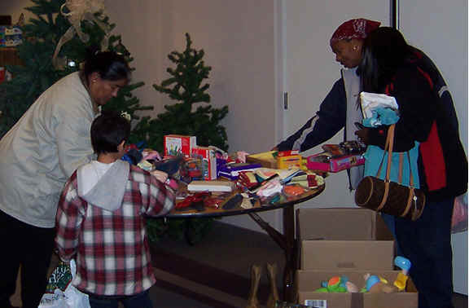

 Become a Partner
Below is a list of common types of partners, if you would like to partner with Jericho Road Ministries please let us know!
| Jericho Road Ministries | |
| Amy Schultz, Executive Director | |
| 2500 Jericho Road | |
| Richland, Washington 99352 | |
| 509-627-0750 | |
Subscriber
Churches and agencies located in WA state may subscribe to 4people.org, a secure, online case management system. 4people.org is HIPPA compliant to ensure privacy and secure data files for networking with other local church charity providers. Training and support is provided. Reports of services rendered are available upon request.
Partner
Churches are the backbone of our existence! Churches may send monthly pledges as a part of their outreach or missions for their local community. Speakers are available to bring a message to your congregation or missions team. Very often, a love offering is taken when a JRM speaker shares a message. These funds help us keep going! Supply drives such as a toy drive at Christmas or a personal hygiene drive help us supply our programs for people in need.
Major donors give a minimum of $1,000.00 in a year but any financial gift is appreciated! Your gift is tax deductible.
Material Gifts
In-kind goods are accepted as long as they are new or like new. This can be clothing, toys, small household items such as lamps, coffee pots, quilts, towels, pot and pans, dishes, etc. School supplies are always needed.
Volunteer Work
Volunteers are a critical part of helping us have a deeper impact on clients. They are often one of the most overlooked means of being a partner.